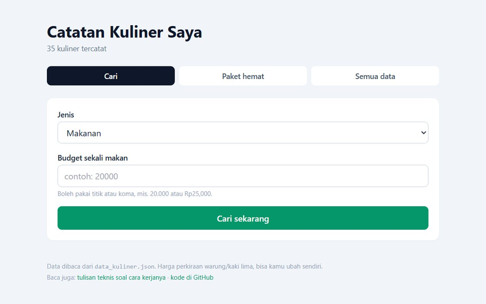

Proyek / Rekomendasi Kuliner Indonesia
Latihan · 2026Rekomendasi Kuliner Indonesia
Program latihan pencarian kuliner berdasarkan jenis dan anggaran, tersedia dalam dua versi: terminal dan web. Sebut jenis kuliner dan anggaran yang tersedia, programnya mencarikan yang muat, lalu mengurutkannya dari yang paling murah.
Kode github.com/Rolin-19/Rekomendasi-Kuliner-Di-Indonesia (buka di tab baru)

data_kuliner.json.Asal proyek
Kode awalnya dari latihan di Codecademy, lalu saya kembangkan sendiri. Awalnya data
kuliner ditulis langsung di dalam kode. Saya pindahkan ke berkas
data_kuliner.json supaya harganya bisa diubah, ditambah, atau dihapus
dari dalam program tanpa perlu menyentuh kodenya.
Programnya memang bukan aplikasi besar. Ini catatan warung untuk dipakai sendiri, dan saya sengaja menuliskannya begitu supaya tidak terdengar lebih besar dari kenyataannya.
Dua versi program
Programnya bisa dipakai dengan dua cara. Versi terminal dijalankan lewat berkas
kuliner.py; dari situ data bisa dicari sekaligus ditambah, diubah, atau
dihapus. Versi web berupa satu halaman HTML yang membaca
data_kuliner.json lalu menyajikannya sebagai tampilan pencarian dan
penyaringan. Versi web hanya menampilkan data, sedangkan perubahannya tetap
dilakukan lewat versi terminal.
Fitur
- Cari sesuai jenis dan anggaran. Pilih makanan, minuman, atau camilan, lalu isi harga maksimalnya. Sisa anggaran langsung terlihat di tiap item.
- Label hemat untuk item yang harganya separuh anggaran atau kurang.
- Pencarian memakai nama, daerah, atau nama warung. Misalnya ketik
JogjaatauBu Tini. - Paket hemat: mencari kombinasi satu makanan dan satu minuman dengan total paling dekat ke anggaran tetapi tidak melewatinya. Kalau masih ada sisa, camilan termurah ikut ditambahkan.
- Rekomendasi serupa dari item yang sedang dipilih, diutamakan dari daerah yang sama dan diurutkan dari harga terdekat.
- Kelola data (versi terminal): menambah kuliner baru, mengubah harga, atau menghapus. Perubahannya langsung tersimpan ke berkas JSON.
Contoh pemakaian
Ini keluaran asli dari versi terminal: pilih makanan, isi anggaran
30000, lalu programnya menampilkan yang muat, diurutkan dari termurah.
Pilih (1-6): 1 Jenis (makanan / minuman / camilan): makanan Budget sekali makan (contoh 20000): 30000 Makanan yang muat Rp30.000: 1. Kerak Telor Rp12.000 (DKI Jakarta) sisa Rp18.000 (hemat) 2. Nasi Goreng Kampung Rp15.000 (Nasional) sisa Rp15.000 (hemat) 3. Tinutuan Manado Rp15.000 (Sulawesi Utara) sisa Rp15.000 (hemat) 4. Nasi Liwet Solo Rp17.000 (Jawa Tengah) sisa Rp13.000 5. Bakso Malang Rp18.000 (Jawa Timur) sisa Rp12.000 6. Gudeg Jogja Rp20.000 (DI Yogyakarta) sisa Rp10.000 ... (13 makanan yang muat)
Data
Data awalnya 35 item, terdiri dari 15 makanan, 10 minuman, dan 10 camilan. Setiap item menyimpan nama, kategori, harga per porsi, daerah asal, nama tempat, dan catatan bebas. Kolom tempat dan catatan sengaja dikosongkan supaya bisa diisi sendiri dari menu kelola data. Isinya jadi catatan yang benar-benar bisa disesuaikan, misalnya harga di warung langganan, bukan angka kira-kira.
Soal harga, saya tidak mengarang angkanya. Acuannya dua sumber: panduan harga makan Indonesia 2026 dari geokepo.id dan Warung Guide 2026 dari The Indonesia Guide. Dari sana saya ambil rentang untuk jajanan kaki lima, makan kaki lima, warung, nasi goreng, kopi, dan es teh. Keduanya panduan umum, jadi angkanya perkiraan, bukan patokan tetap di setiap warung. Tautan diakses 17 Oktober 2026.
Yang dilatih di proyek ini
- Struktur data: menyimpan dan mengambil kembali data kuliner dari bentuk yang mudah diubah.
- Algoritma pencarian dan pengurutan: menyaring sesuai anggaran, mengurutkan dari yang termurah, dan menyusun kombinasi paket hemat.
- Penanganan berkas JSON, termasuk menulis kembali perubahan ke berkas aslinya.
- Pengujian unit untuk memastikan logikanya tidak rusak saat data ditambah.
- Git untuk mencatat setiap perubahan kode.